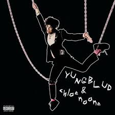

Nome: Parents
Artista: YUNGBLUD
Letra:
Blah!
I was born in a messed up century
My favourite flavoured sweets are raspberry amphetamines
I bought a car, Beretta, age 16
I brush my teeth with bleach
'Cause I ain't got time for cavities
My daddy put a gun to my head
Said, "If you kiss a boy I'm gonna shoot you dead"
So I tied him up with gaffa tape
And locked him in a shed
Then I went out to the garden
And I fucked my best friend
'Cause my
High hopes are getting low because these people are so old
The way they think about it all
I tried I would never know
My high hopes are getting low
But I know I'll never be alone
It's alright, we'll survive
'Cause parents ain't always right
Drop a toaster in my bath
Watch my mum and dad laugh
See a thousand volts go through the son they wish they never had
They told me casual affection leads to sexual infection
But it's hard to get an erection
When you're so used to rejection
Yeah, the teacher fucked the preacher
But then he had to leave her
Had to wash away the sins
Of a male cheerleader
Hi, nice to meet ya, got nothing to believe in
So let me know when my breathing stops
'Cause my
High hopes are getting low because these people are so old
The way they think about it all
If I tried I would never know
My high hopes are getting low
But I know I'll never be alone
It's alright, we'll survive
'Cause parents ain't always right
Tick, tock, stop the clock
Because I get the feeling that I'm gonna get shot
Tick, tock, stop the clock
Because I get the feeling that I'm gonna get shot
My
High hopes are getting low because these people are so old
The way they think about it all
If I tried I would never know
High hopes are getting low
But I know I'll never be alone
It's alright, we'll survive
'Cause parents ain't always right


Veja o video